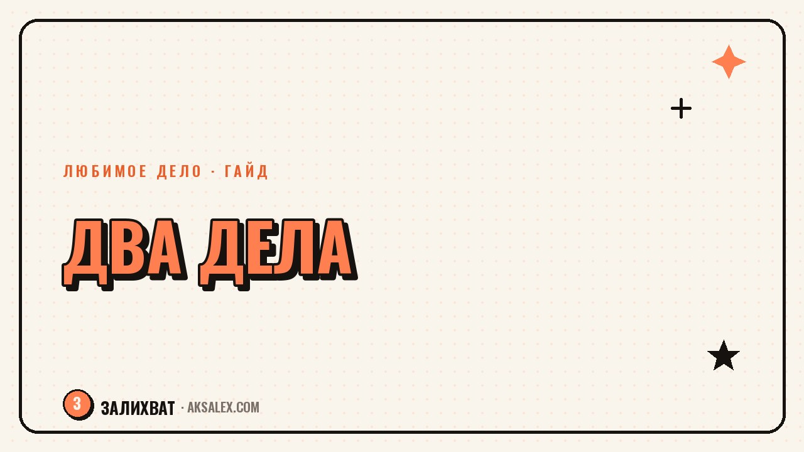

Как совмещать любимое дело с основной работой

Уволиться и с головой уйти в любимое дело - красивая история, но рискованная, если доход от нового занятия пока не покрывает счета. Большинство людей, которые в итоге зарабатывают на деле мечты, какое-то время вели его параллельно с основной работой. Вопрос не в том, бросать или не бросать, а в том, как не сгореть, пока держишь два дела одновременно. Разберём, как выстроить время, границы и ожидания, чтобы совмещение не превратилось в постоянную усталость без результата.
Почему совмещение - это нормальный путь, а не компромисс
Есть миф, что совмещение - это недостаточная смелость, а настоящий путь к мечте начинается только после громкого увольнения. На практике резкий прыжок без финансовой подушки часто кончается паникой уже на второй месяц, когда нужно платить за аренду, а клиентов пока мало.
Совмещение даёт время проверить гипотезу без давления «это должно прокормить меня уже сейчас». Ты можешь ошибаться и менять направление, пока основная работа закрывает базовые расходы.
Когда совмещение действительно не работает
Если основная работа отнимает физические силы настолько, что на любимое дело не остаётся даже получаса в день несколько недель подряд - это сигнал пересмотреть формат, а не упрекать себя в недостатке дисциплины. Иногда решение не «найти больше силы воли», а сменить основную работу на менее выматывающую.
Как найти время без ночей без сна
Самая частая ошибка - пытаться вставить любимое дело в уже забитый график силой воли, урезая сон. Это работает неделю-две, а потом организм берёт своё, и ты бросаешь дело не потому что оно не нравится, а потому что истощена.
Где реально находится время
- Утренние 40-60 минут до основной работы - мозг свежий, меньше отвлекающих сообщений.
- Обеденный перерыв - не на отдых глазами в телефон, а на конкретную маленькую задачу по проекту.
- Один выходной день целиком, а не оба - второй нужен на восстановление, иначе выгорание неизбежно.
- Время в дороге - голосовые заметки с идеями, прослушивание материалов по теме дела.
Важно не размазывать дело на мелкие пятиминутки весь день - это создаёт ощущение постоянной занятости без видимого результата. Лучше 2-3 фиксированных блока в неделю по 1-2 часа, чем ежедневные обрывки внимания.
Границы между двумя делами
Без чётких границ любимое дело начинает воровать энергию у основной работы, а работа - у дела. Результат - делаешь обе задачи хуже обычного и чувствуешь вину перед обеими сторонами одновременно.
Полезно физически разделить пространство и время: если дело ведётся по вечерам, закрывай рабочие чаты до того, как садишься за него. Коллеги и клиенты быстро привыкают к твоим реальным рамкам, если ты сама их держишь.
Границы не защищают дело от работы - они защищают тебя от того, чтобы делать два дела одновременно и ни одно нормально.
Как не выгореть за первые три месяца
Выгорание на старте совмещения случается не от того, что дел много, а от того, что нет видимого прогресса и нет пауз. Мозгу нужны маленькие подтверждения, что усилия не уходят в пустоту, и регулярный отдых без чувства вины за него.
Признаки, что пора притормозить
- Любимое дело начало вызывать раздражение, а не интерес - даже в моменты, которые раньше радовали.
- Ты не можешь вспомнить последний день без мыслей о задачах по обоим делам.
- Сон стал короче недели подряд, а не разово.
- Появилось чувство, что бросить всё - единственный выход, хотя раньше дело нравилось.
При этих признаках не нужно немедленно бросать дело - достаточно на неделю снизить темп, вернуть сон и один полноценный выходной. Выгорание чаще про ритм, а не про саму идею дела.
Форматы совмещения: что выбрать
Разные форматы подходят под разную загрузку на основной работе и разный этап дела. Вот сравнение, которое помогает выбрать стартовую точку.
| Формат | Нагрузка в неделю | Подходит, если | Риск |
|---|---|---|---|
| Хобби-уровень | 2-4 часа | Проверяешь, нравится ли дело вообще | Медленный прогресс |
| Сайд-проект | 6-10 часов | Уже есть первые клиенты или аудитория | Усталость без подушки отдыха |
| Переход на частичную занятость | 15-20 часов | Доход от дела близок к половине зарплаты | Нестабильный доход на переходе |
| Полный переход | 30+ часов | Доход от дела устойчив 3-6 месяцев | Потеря стабильности, если рано |
Когда пора задуматься о переходе
Переход от совмещения к полной занятости логично рассматривать не по ощущению «надоело работать на дядю», а по цифрам: стабильный доход несколько месяцев подряд, подушка на 3-6 месяцев расходов, понятный поток клиентов.
Если этих условий пока нет, совмещение - не временный позор, а разумная стратегия. Многие люди ведут дело параллельно с работой годами, и это не делает их менее серьёзными профессионалами, чем те, кто ушёл в свободное плавание раньше.
Частые вопросы
Сколько времени в день нужно уделять любимому делу, чтобы оно реально развивалось
Для старта хватает 1-2 фиксированных блоков в неделю по 1-2 часа, если они регулярные, а не случайные. Ежедневные десять минут без системы дают меньше результата, чем два плотных блока в неделю.
Как объяснить близким, почему остаёшься на основной работе, если дело уже приносит доход
Стоит честно назвать цифры: доход от дела, размер подушки, срок стабильности. Это снимает ощущение, что ты боишься или не веришь в себя - решение основано на расчёте, а не на страхе.
Что делать, если на основной работе внезапно вырос объём задач
Временно снизь темп по любимому делу до минимального поддерживающего уровня, а не бросай совсем - так проще вернуться, когда нагрузка на работе спадёт. Полный разрыв с делом труднее восстановить, чем пауза.
Нормально ли, что любимое дело на этапе совмещения не приносит денег вообще
Да, на старте почти любое дело проходит этап без дохода - это время на пробы и первую аудиторию. Важно заранее решить, сколько месяцев ты готова инвестировать время без финансовой отдачи.
Как понять, что пора выбрать одно из двух дел
Если совмещение больше года не даёт ни роста дела, ни покоя на основной работе, и обе сферы страдают одновременно - это сигнал пересмотреть формат. Решение не обязательно радикальное: можно снизить обязательства по одной стороне, а не бросать её совсем.
Раз тема оказалась полезной, вот что почитать следующим. Как event-организатору ускорить сценарии, визуализацию и смету с помощью нейросетей - без потери авторского подхода.
Читать статью →а не вручную